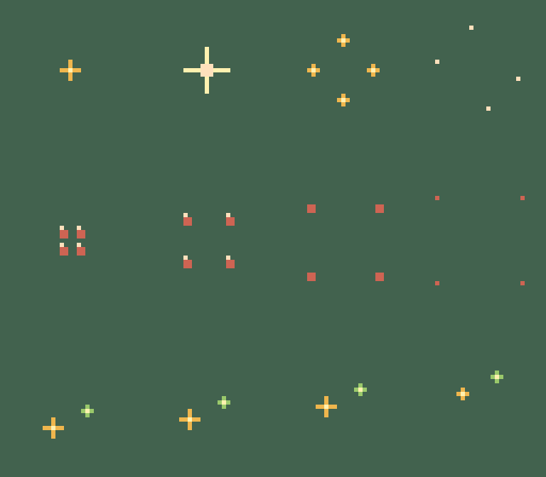
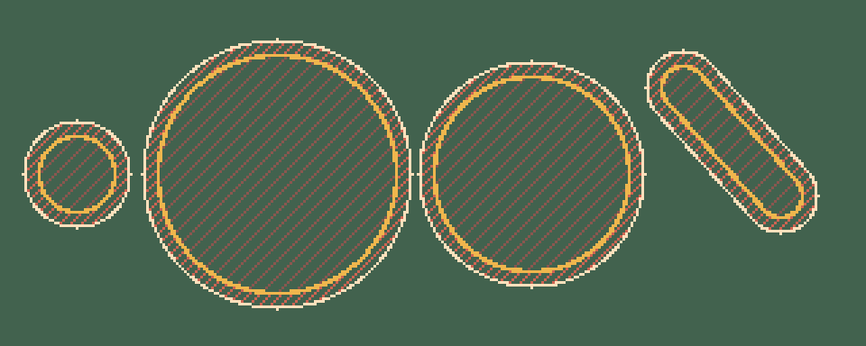

Candidatos geométricos originales. Sin integración productiva ni aprobación visual. El lienzo32×32 contiene un acento pequeño; no es una hitbox. No cambia mecánicas.
Impacto · 4×40ms
Daño · 4×50ms
Recolección · 4×70ms
Los visores repiten despacio para inspeccionar poses; esta velocidad no es la duración propuesta en juego.
Filas: impacto, daño, recolección. Columnas0–3.

Slime, onda, pisotón, cápsula diagonal de muestra. Dorado=área base; crema=límite efectivo para el centro del PJ; punteado=tolerancia6px.

No son sprites para copiar sobre el mapa: calcular dinámicamente el radio y el segmento real. La embestida avanza de forma instantánea al resolver, y solo daña al objetivo fijado.
Contrato e integración · Manifiesto · Validación atlas · Validación geometría